Welcome to a free tool that offers you lots of options but is not very intuitive!
This guide operates on the 2.18 version (Las Palmas), in case you haven't installed it yet, please head to the download page.
To get started with a choropleth map, where you color geographical units according to different values, you need
It's important that both your geofile and your dataset have one column in common, that you can use later on to connect the two. This column can have a different column title in each of the files, but the content of that column should be the same (e.g. district ids).
Meet the QGIS interface and the most important buttons on it
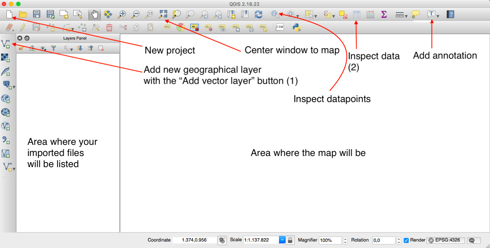For shapefiles: Make sure you have all five filetypes (.shp .dbf .shx .prj .cpg)
And zip the folder containing them
You can either drag-and drop the zipped file onto the left panel where it says 'Layers Panel' on top;
or you can use the 'Add vector layer' button (1), if you click it, an import dialogue opens.
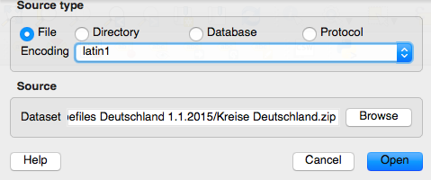Choose the right encoding (if you already know it, if not you can still change that later), select the path where you have saved the zipped shapefile and click open.
It should result in an image like this:
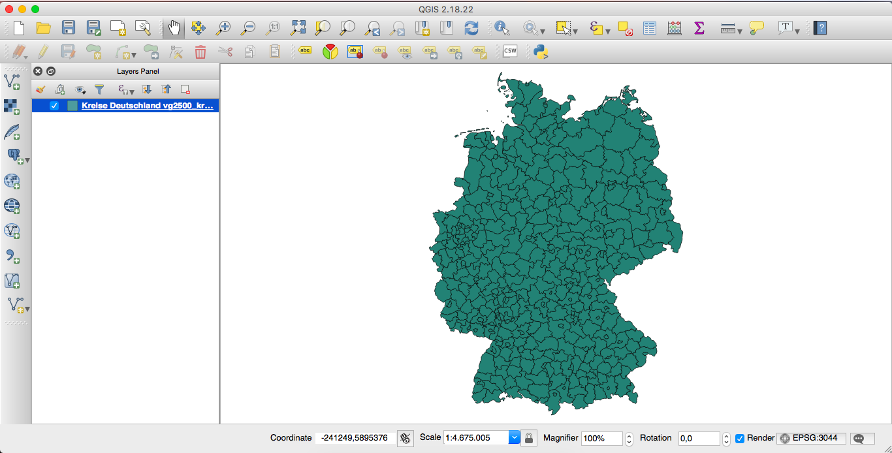You can now take a first look at the data, by clicking on the "Open Attribute Table" button (2) to inspect the data and a table view of your imported data opens.
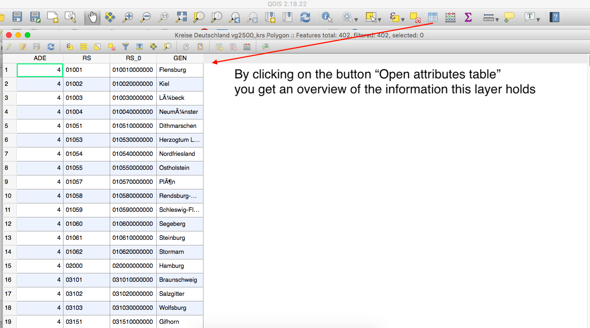You can now see that the dataset has four different columns: ADE, RS, RS_0 and GEN. If you look at the contents of the GEN column, you will see that some of the letters aren't displayed correctly. This points at an encoding error. To fix this, you need to close this attribute table and open the properties of the layer, by right-clicking on the layer.
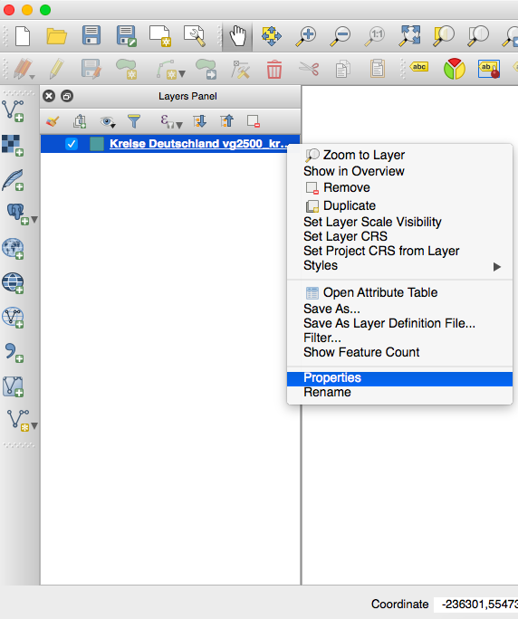Then the properties window opens. Note that it has many different tabs on the left-hand pane (we will use some of them later), but that you are automatically directed to the 'General' one, where you can change the 'data source encoding' (a) to fix the encoding issue we found earlier.
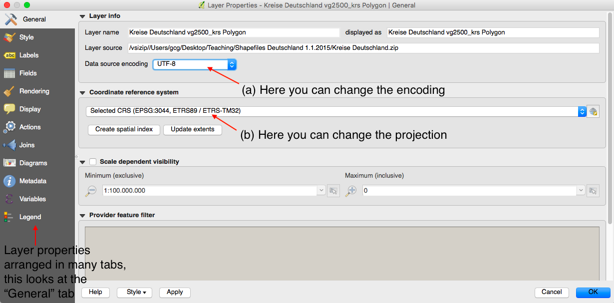You can also select a projection (b) if you want to. This is especially relevant if you map something on a larger scale (e.g. the African continent). Projections define how to bring the round shape of the earth to a 2d area in the most useful way. When sourcing your geospatial data layer, you should then watch out for which projection it uses and also select the same one here.
The easiest way is to just drag and drop it into the layers panel on the left-hand side.
You should check whether the encoding is correct via the open attributes table, like we did with the above dataset (and of course, correct it, if it isn't right.
Next, we are going to look at another of the properties. Open the properties window with right-click on the layer and select the fields tab.
In the 'Fields' tab QGIS gives you a list of all the columns that are contained in your dataset and also lets you know what type of data is in each column.
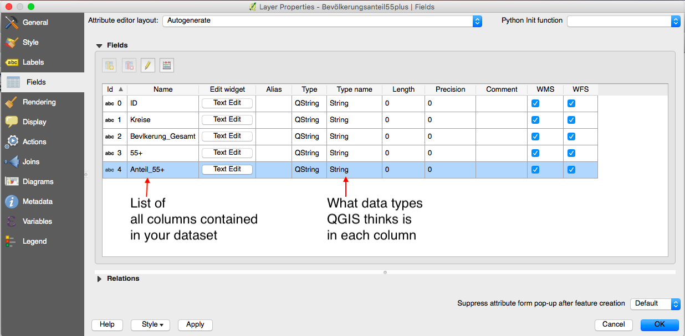There are three data types that are relevant to us right now: "String" refers to words, "Integer" would be non-decimal numbers and "Real" would be decimal numbers.
In order for us to color the map according to a certain value, e.g. the share of people above 55 years old, QGIS needs to recognize that the column containing these values is numerical -- so it would need to say "Real" here, instead of "String". But right now, QGIS thinks that both columns '55+' and 'Anteil_55+' contain words, not numbers.
Since QGIS seems to not do a good job at recognizing the datatype correctly by itself, we need to let QGIS know what data type is in each column. To do that, we need to create an additional file.
Open a text editor like Atom or Sublime Text in order to create a .csvt file.
In this file you tell QGIS what data type is in each column. It's important to get all the details right on this one:
As said, save it with the same name, but csvt ending in the same folder as the actual dataset.
Now, just based on the mere existance of the file, QGIS does not automatically reload the data. So we need to remove the dataset from QGIS first (by deleting it: right-click on the layer and select 'Remove')
After deleting the old import, you can now re-import the same data file by drag and drop. You only need to import your actual csv file, not the csvt file. The fact that it is present is sufficient, as QGIS automatically has a look at the source where your import from, looking for that csvt file by itself.
If you now look at the "Fields" under that layer's "Properties" again, you will see that QGIS now correctly identifies the two last columns as containing integers or decimal numbers, respectively.
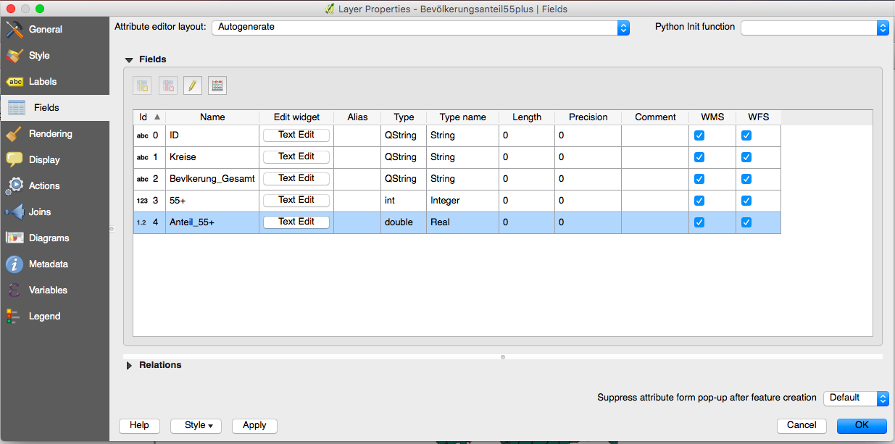Which means we are finally ready to join the two together! \o/
Open the properties window for your geofile and select the tab "Join". On the bottom of this tab, you'll find a green plus sign – click it!
Another window will open where you define what to connect the geofile to and how.
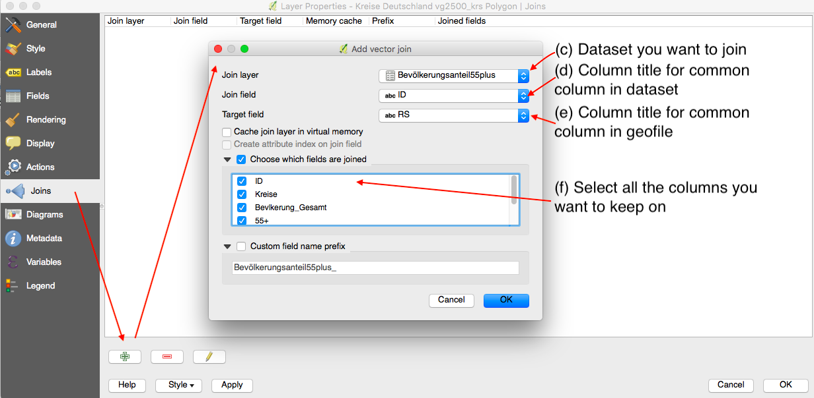On (c) you select the dataset you want to join
On (d) you select the column both files have in common -- for the dataset.
On (e) you select the column both files have in common -- for the geofile.
On (f) you define what should be taken on to the joint file: we want to select manually and we want to select all of it.
After you've made all these selections, click OK and OK again.
On first sight, you won't see any change. That's because we have connected the files, but we haven't told QGIS yet, what to color it by.
Open the properties of the geofile-layer and go to the "Style" tab. Here, we have to change several things:
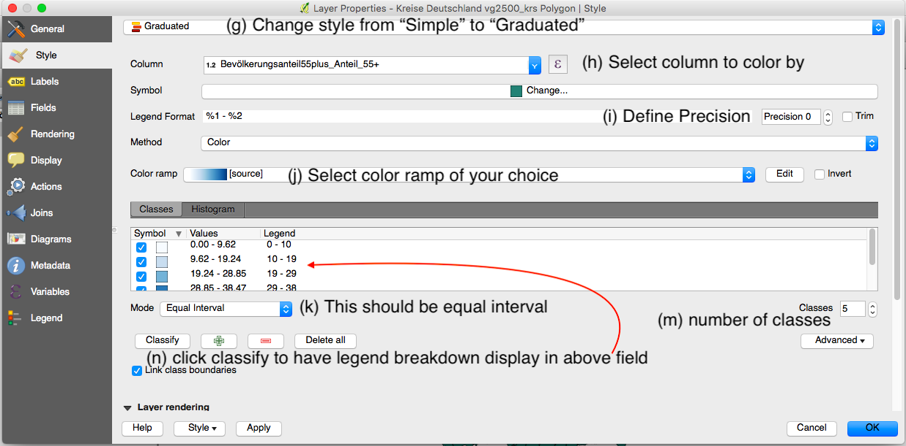(g) Change the style from 'Simple' to "Graduated"
(h) Select the column to color by
(i) in the Legend Format select "Precision 0" (for zero decimal points)
(j) select a color ramp of your choice
(k) make sure the Mode is on "equal intervals"
(m) the number of classes you want to diplay
(n) classify and then ok
Then your map should look like this:
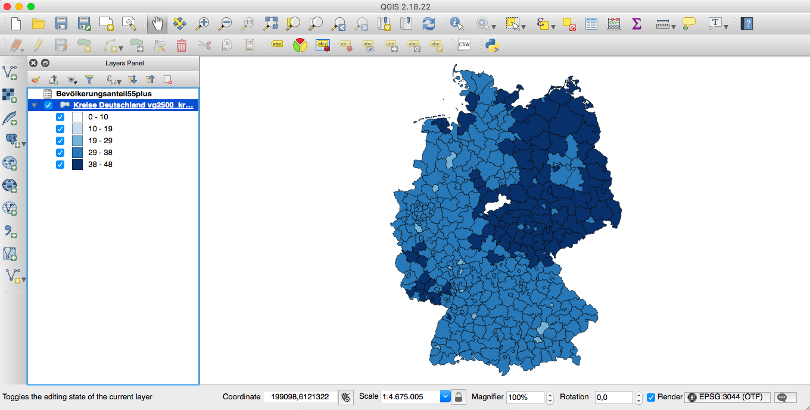When you see white spots on your map, like the one right in the middle, this could be either because the data is missing in the original dataset or the joining the geofile to the dataset didn't work for this particular datapoint. You should always follow up on seemingly missing data and find out why it is not displayed and whether it can be corrected or is ok for your story.
By clicking on the 'Identify features' button you can select single geographical units and see the values for them.
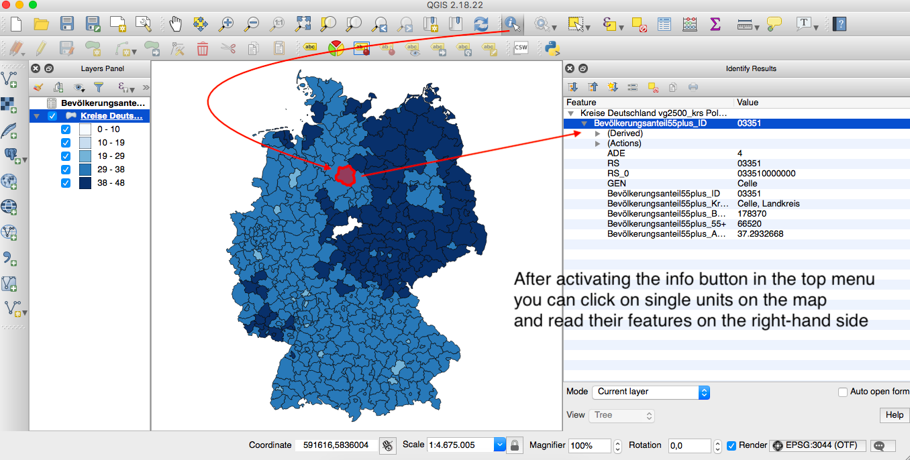After you finished styling your map, you'd want to export it. If you go to the menu and click on project, there's "Save as image" in the dropdown menu. However, this only saves the map itself, without a legend. If you want to include the legend (you basically always want that), you need to go down to and click "New Print Composer"
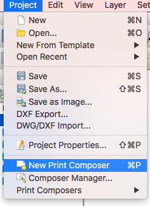Yet another window opens, with another set of buttons.
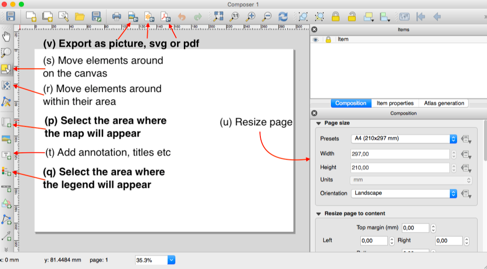In the end, the least you are exporting should look like this:
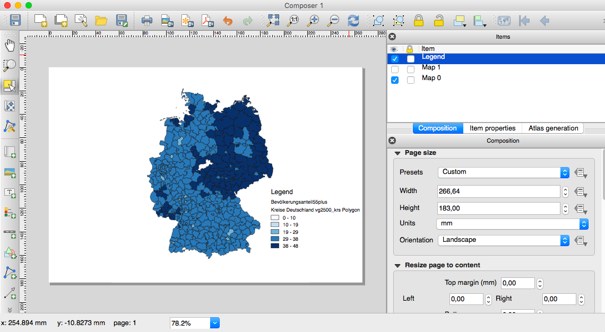